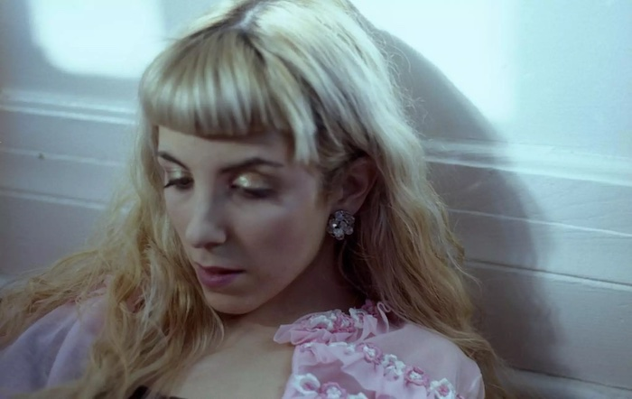

I've been in Los Angeles for just about three days now. I initially came into this trip with a lot more fear than excitement. To me this city always represented the focal point for so many things I'm interested in. Somewhere experimentation is encouraged and forward-thinking music thrives among crowds of people all working to realize what makes them stand out.
Over the past 22 years my idea of the city has been carefully crafted through articles, movies, YouTube videos, and songs. It's so easy to build up these thoughts of what somewhere could be or offer. This then leads to the constant what-ifs and fear that something won't live up to expectations.

I've recently been listening a lot to what we say in private, the debut album from Montreal-based artist, Ada Lea. The project is an emotional trip through unconventional song structures and chaotic instrumentation all while Lea's soft but powerful vocal delivery floats through the noise. It's a breakup album that spends its time reflecting rather than being spiteful.
The album deals with transition and internal struggles. Whether Lea is daydreaming on “180 days” singing “I want the days to hurry by, without losing my mind / and go to a party, fall in love with every one that I meet,” or working through the past on “what makes me sad” delivering the verse “we stared so hard at each other / we lost sight of ourselves / and now I'm feeling vacant from myself.”
Recently I've been finding it increasingly difficult to envision what my future will look like. This transition from 22 years of constant education to the “real world” is bizarre. Over the next few weeks I'm hoping to discover as much as I can about the city, as well as myself.
On what we say in private Lea is dealing with change and difficulty through a positive lens. There's more acceptance than blame. She's moving forward treating everything as a collection of experiences. I hope to do the same.